My Portfolio
Check out my portfolio to see a selection of my latest tattoos! I'm always excited to push my creativity with new projects, so don’t hesitate to reach out with your ideas.
My Specialties
Realism & Portrait Tattoos
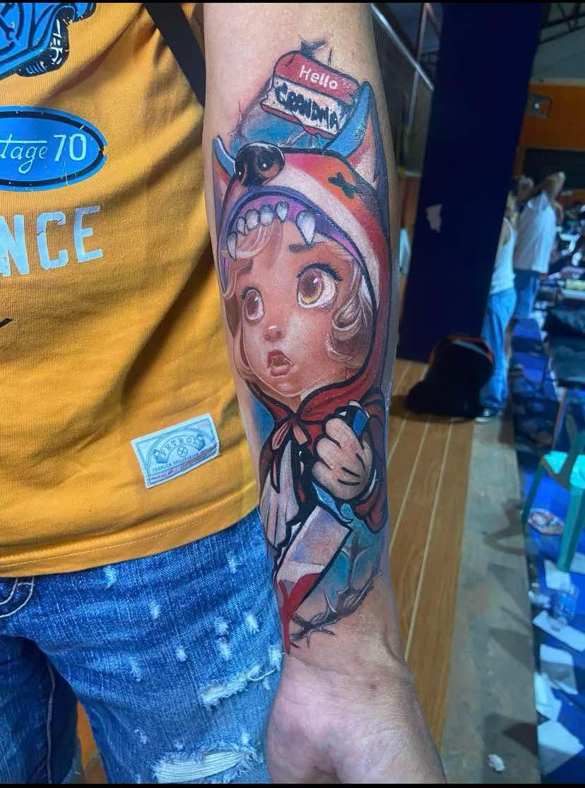 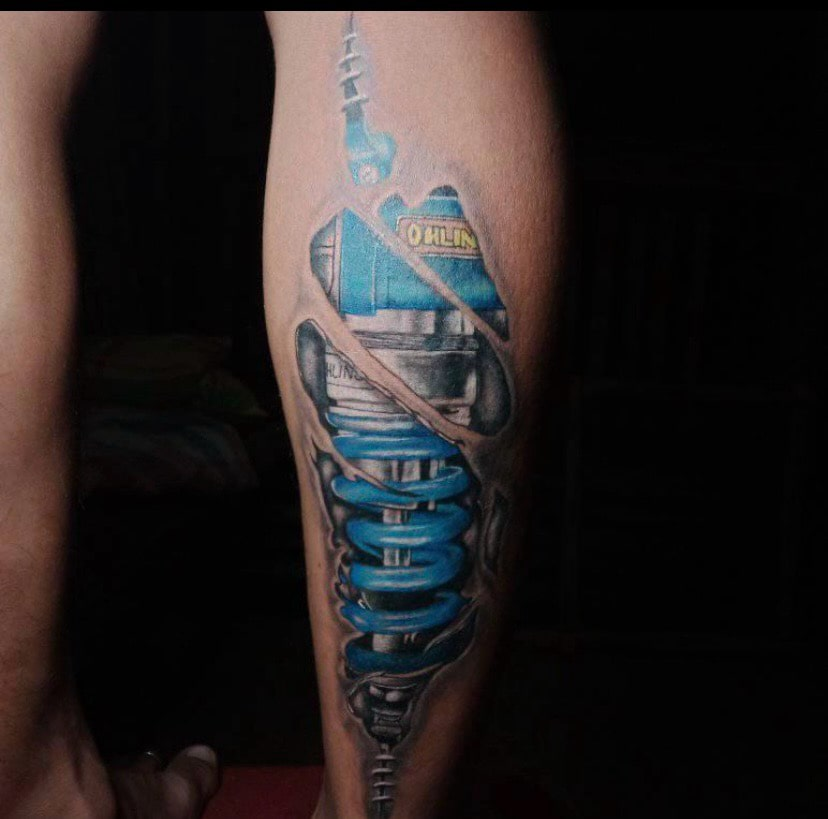 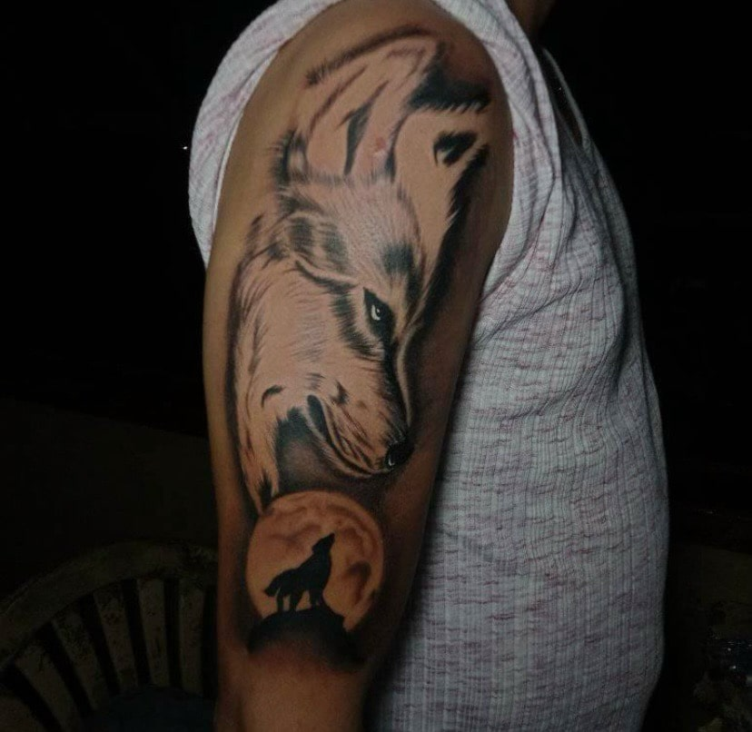
Floral & Nature-Inspired Designs
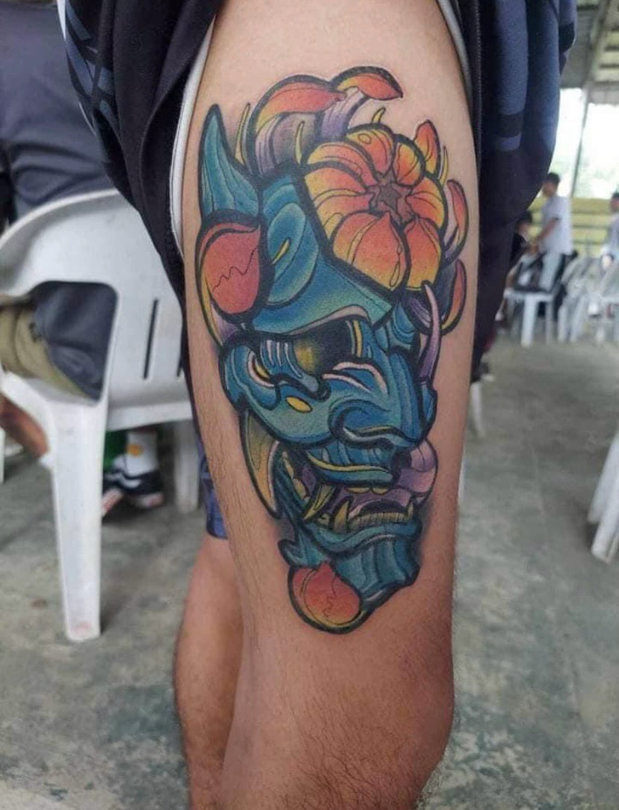 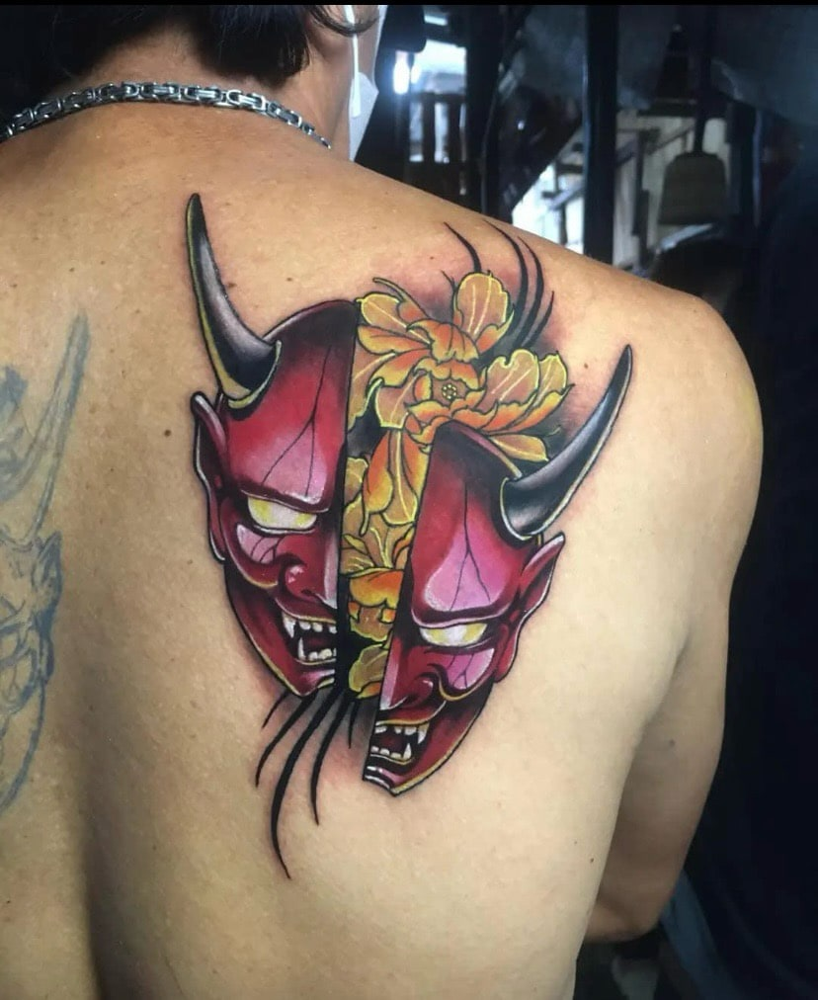 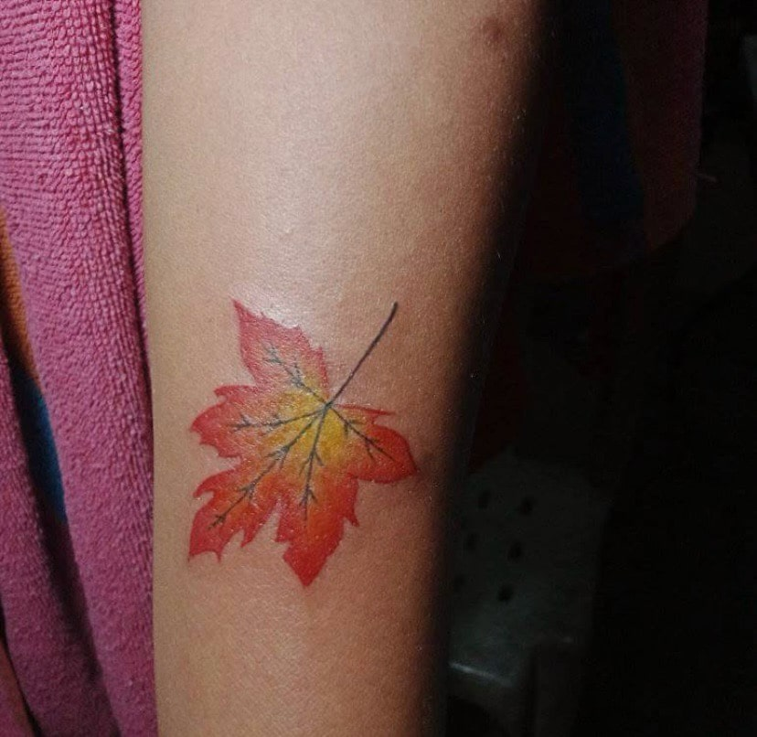 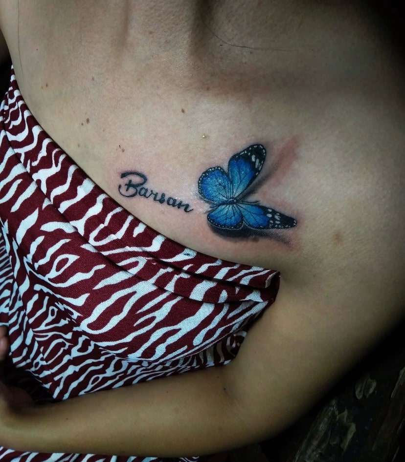Geometric & Abstract Art
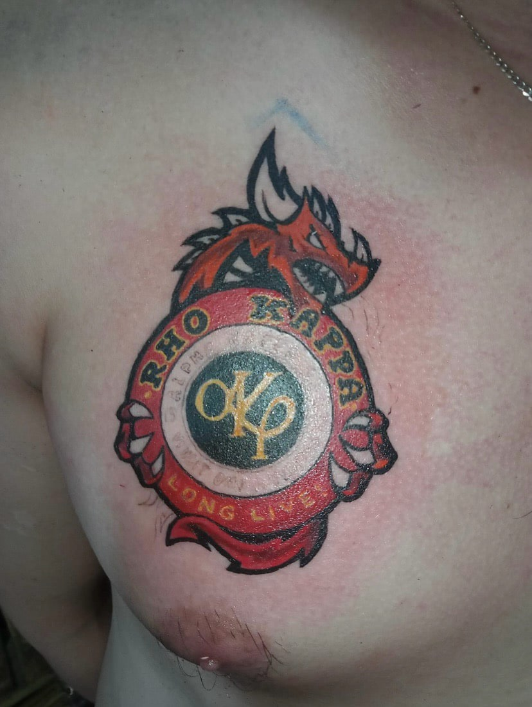 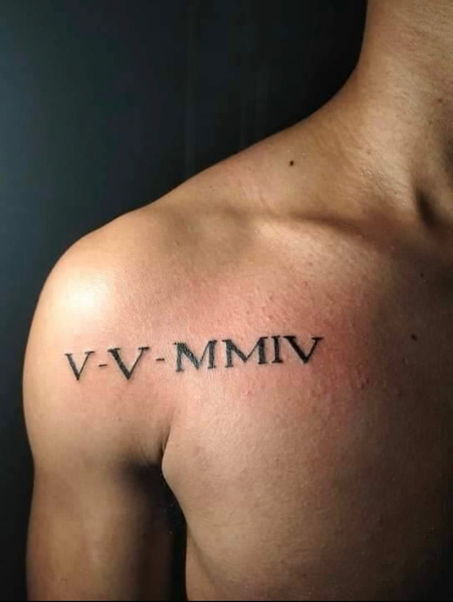 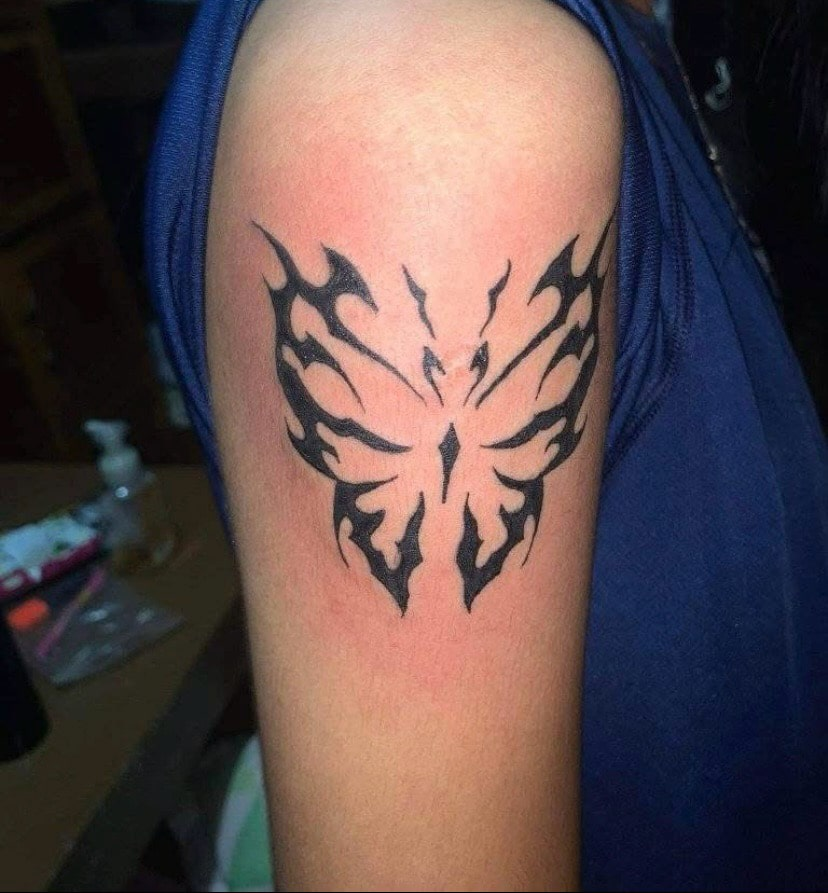My Approach Every tattoo is a unique piece of art, and I believe in collaborating closely with my clients to bring their vision to life. I take pride in using high-quality materials and maintaining a clean, comfortable environment. Whether it’s your first tattoo or you’re adding to your collection, I ensure a positive and professional experience from start to finish.
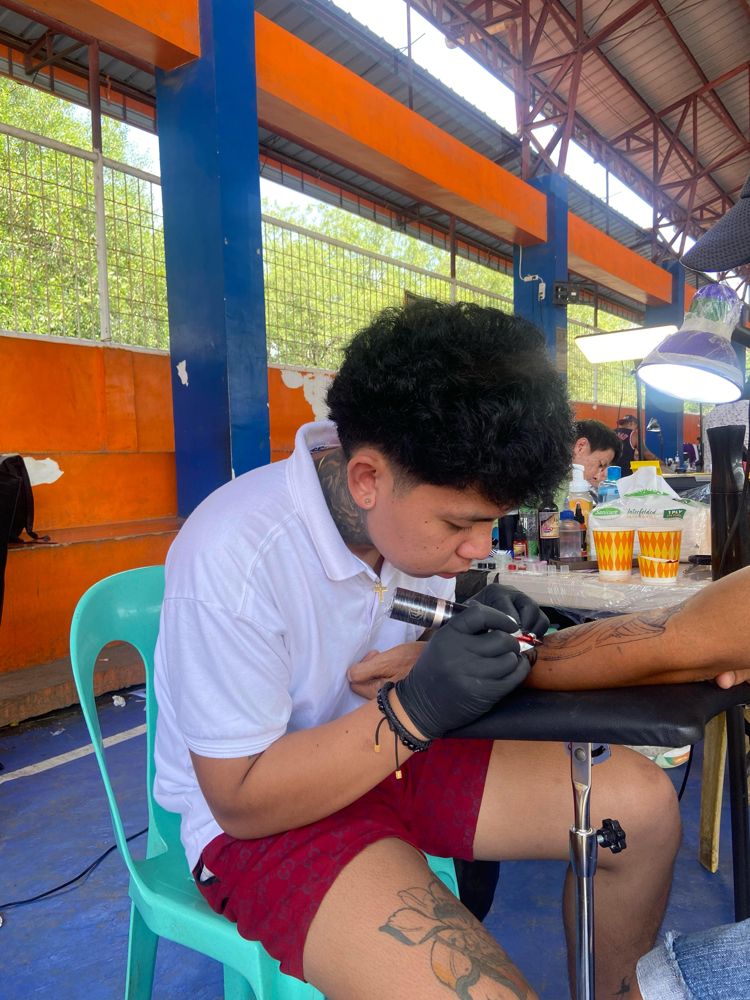
Career Goal
My career goal is to become a skilled tattoo artist, combining my passion for art with technical expertise to create unique and meaningful tattoos for clients.
Client Testimonials
"Frengie is incredibly talented and made my first tattoo experience unforgettable. The detail and precision in my piece were amazing!"– JL "I couldn’t be happier with my sleeve! The artist really took the time to understand my vision and made it a reality." – Jay